I build ideas into
experiences.
I direct and engineer interactive experiences with AI, digital humans, real-time graphics, and film.
My work begins with a question, becomes a functioning system in Unity, Unreal, or a media pipeline, and reaches people as an installation, game, performance, or moving image. I work across concept, technical direction, implementation, and presentation.
Built systems, experienced by people.
A focused selection of working interactive systems, AI-mediated characters, generative moving images, and technically directed projects. Each case begins with what the audience experiences and follows through to the build.

AI Choi Jung-hoon
A real-time digital performer connects voice input, a GPT-driven response, speech synthesis, facial animation, and body tracking. I developed the character and interaction pipeline to test what makes a synthetic performer feel responsive.

AI ZOO
An interactive installation links a digital human, synthesized voice, audience input, motor-driven motion, and light. Its feedback loop explores how people assign emotion and agency to a computational being.

Escape Metro
A Unity VR escape game places a conversational AI character inside the logic of a surreal subway. I directed the experience and integrated real-time dialogue with spatial exploration and puzzle progression.
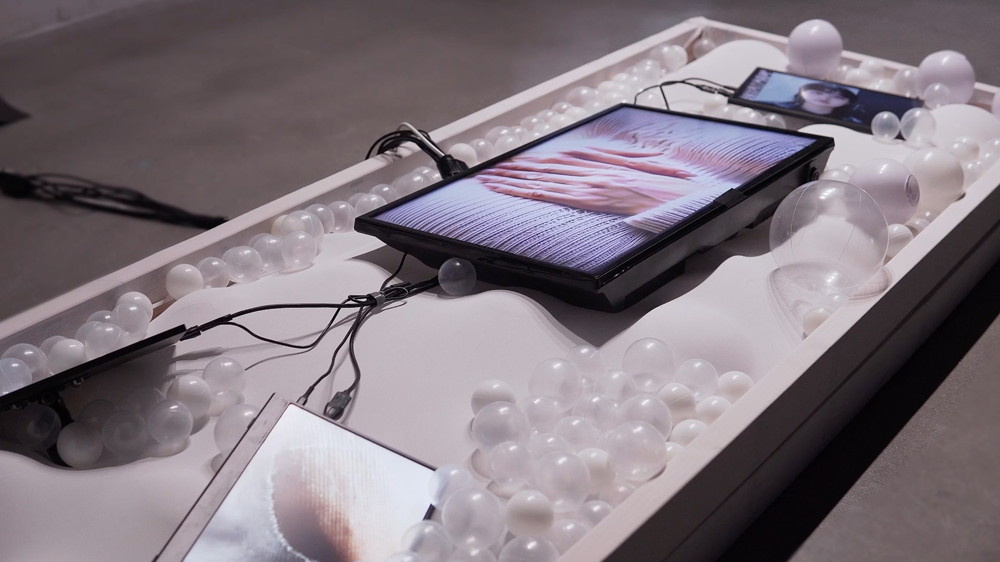
Directed By AI
A film and installation experiment using personal facial data, diffusion-based character imagery, voice transformation, and AI-assisted narrative development to construct a fictional family.
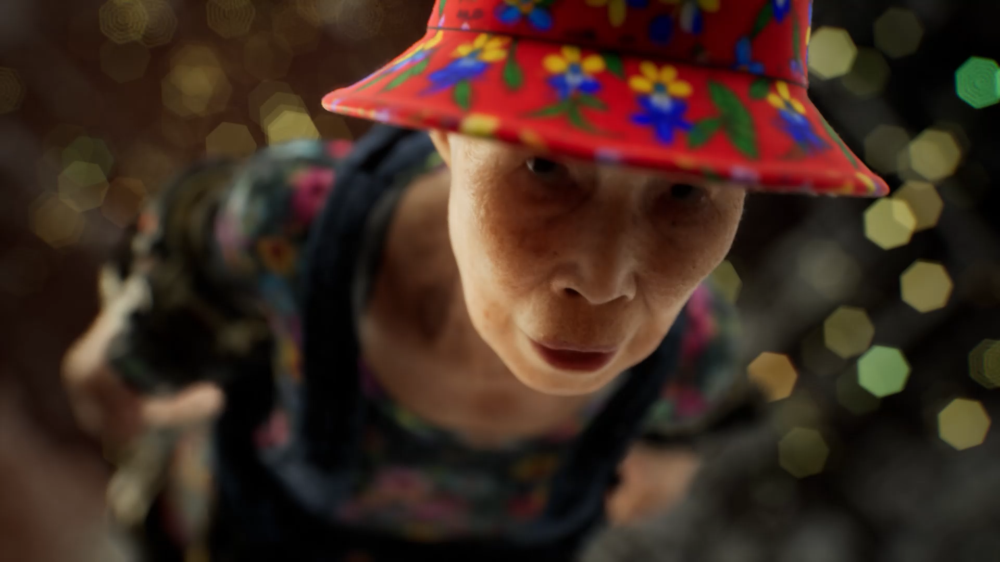
Shininho
A real person's scan became a production digital human for performance and exhibitions. I worked across geometry, rigging, retargeting, facial/body capture, MetaHuman integration, and Unreal presentation.
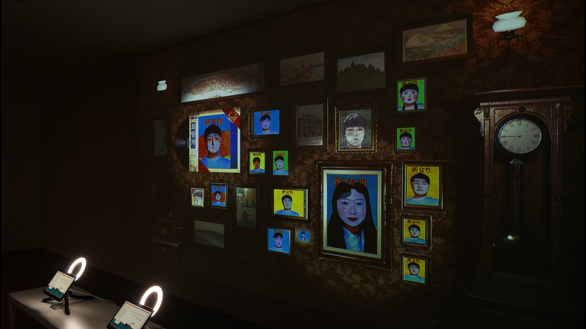
Jemulpo Photo Studio
A museum installation captures visitors and transforms their portraits into period-inspired covers. I connected Unity, Python, computer vision, person segmentation, real-time display, and automated archiving.
Independent Real-Time Game
In an independent game production with Erick Oh, I connected Unity C# interaction and state logic to HLSL shaders, deformation, raymarched effects, and art-directed animation.
Complete work archive
Selected projects above lead with prototypes and production. The complete body of work below remains organized by medium for deeper exploration.
Interactive Art
09 works
To Eternity
A sustained flower-offering gesture activates an archival photo mosaic, transforming the visitor's silhouette into a projected memorial portrait.

AI Gang Se-hwang
Historical portrait research, character construction, capture, and Unity interaction become a responsive museum docent.
Jemulpo Photo Studio
Unity, Python, segmentation, TCP, and visual processing turn live visitor portraits into an evolving museum display.
AI ZOO
A digital human, voice, audience input, motor motion, and light form a feedback system that invites emotional interpretation.
Directed By AI
Personal face and voice data become fictional family characters through generative imagery and AI-assisted narrative production.

Silhak Dance
A reconstructed scholar mirrors visitors' body movements and brings historical learning into physical play.

Track 6
Kinect-tracked bodies become moving geometry across six music-driven virtual environments.

Beads Wall
Visitors' silhouettes become transient constellations of colored beads on a responsive media wall.
AI Choi Jung Hoon
A real-time digital performer integrates speech input, GPT responses, synthesized voice, lip sync, and body sensing.
Film
06 works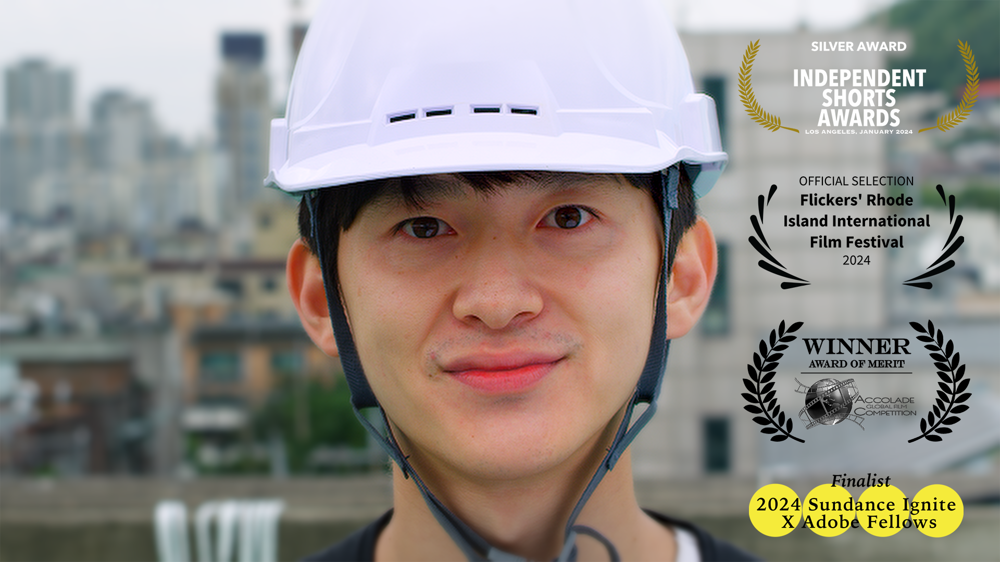
Non-Done Record
An aspiring filmmaker's unfinished ambitions return as a film of repeating memories and fractured time.
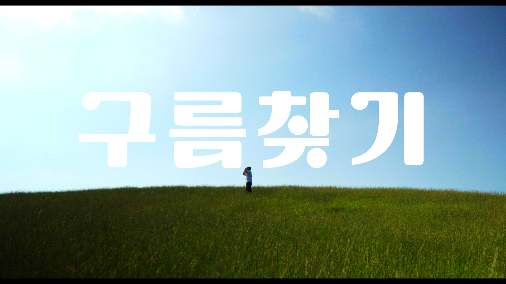
Where Is My Cloud
Eight years of lost digital records initiate a documentary journey through voice, place, and imagined recollection.

Urban Diary
A teenage girl's routine changes when her father returns to work and the apartment becomes a space of absence.
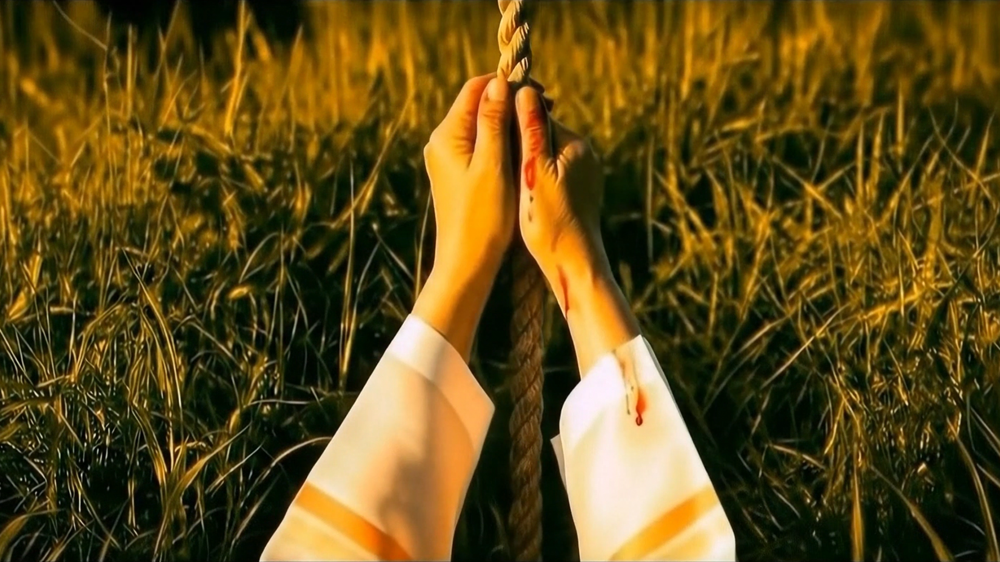
Like Mother
On a subway after a funeral, a daughter encounters her mother across changing ages and unstable memories.
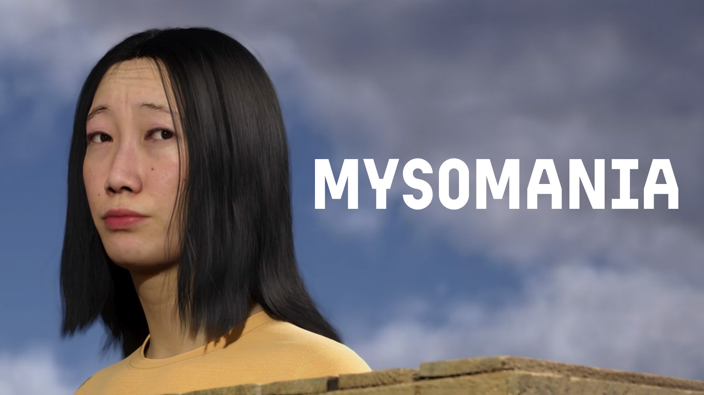
Mythomania
Three strangers on an isolated raft test their accounts of guilt in an austere animated world.
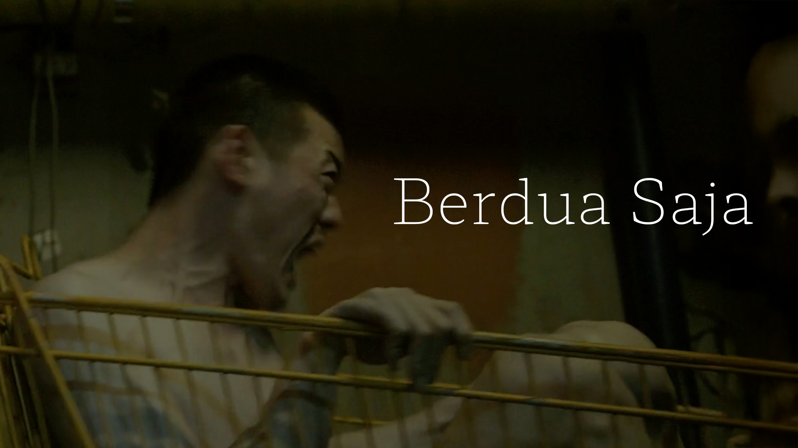
Berdua Saja
A troubled man reaches an uncanny inn and finds an unexpected possibility of human connection.
Media Art
08 works
Algorithm of Flowers and Grammar of Waves
Landscapes, waves, and memory fragments dissolve into and reassemble from particle-based motion.

DADA Myeongdong
Myeongdong's morning, night, and dawn become shifting layers of light, movement, and urban afterimages.
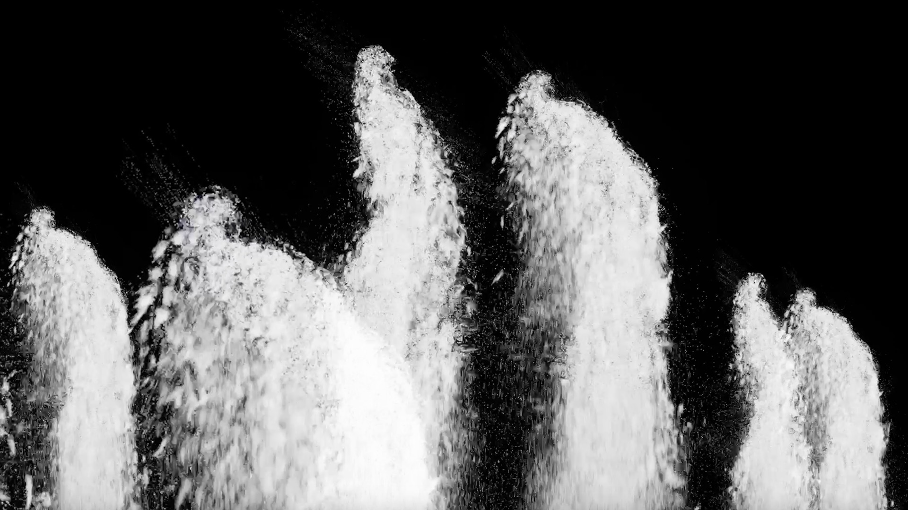
Dream of Salmon
Fish-like luminous forms gather and disperse around a dancer in a collaborative media-facade performance.

Fall of Minds
Ambient sound controls the density and motion of a generative waterfall in a public installation.
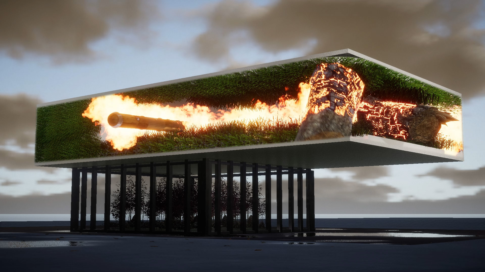
The Nature of Manpasikjeok
Wind and sound-driven imagery reinterpret the Korean legend of the magical flute Manpasikjeok.
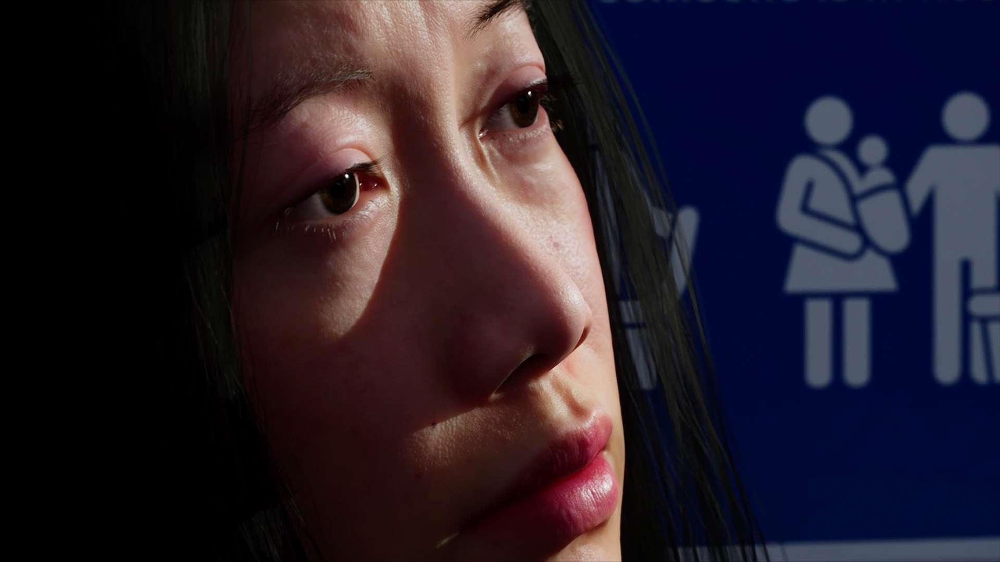
Seon-a's Family
Generated family imagery and digital-human production support a story about conflict and reconciliation.
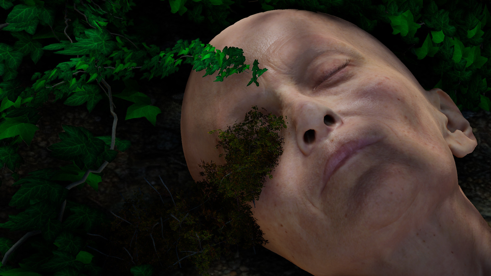
Nature Human
A virtual human named Evangeline invites dialogue about an ecological future in 2050.
Shininho · Digital Human
From real-person scan to rigged, performed digital human across MetaHuman and Unreal exhibitions.
XR / Game
05 works
Fineo, Translated Universe
Chemical-element data becomes an explorable spatial universe using harmonograph-inspired forms.
Escape Metro
A subway escape game embeds AI dialogue into spatial puzzles and progression instead of a separate chatbot.

NARCI
An enclosed elevator stages direct encounters with manipulative characters and the viewer's own perspective.

Be NARCI
The viewer gains the power to transform virtual bodies, reversing the perspective of NARCI.

Graffiti Freedom
A virtual subway station becomes a public canvas for spatial graffiti and unrestricted mark-making.
Algorithm of Flowers and Grammar of Waves
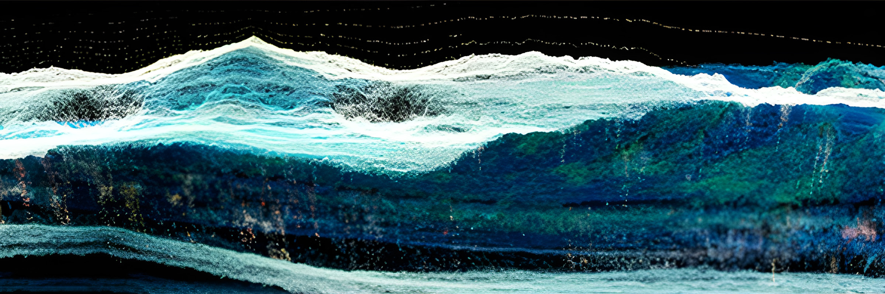
Particle landscapes formed from waves, reconstructed places, and fragments of memory.
Presented through the Art Korea Lab media-wall program, the series unfolds as shifting particle landscapes built from waves, reconstructed places, and fragments of memory.
View work →Research into interactive human representations
Practice-based questions become technical experiments: human deformation, interactive 4D representation, embodied perception and neural graphics. Research in progress is identified separately from completed work.
Interaction-Ready 4D Humans
This research examines how deformation spreads across semantically meaningful regions in Gaussian human representations. Current experiments reconstruct the pretrained HUGS model and compare learned LBS behavior with SMPL-based controls. Counterfactual ablation is the next step before making a causal claim.
Neural Graphics & Video Algorithms
3D Gaussian Splatting and NeRF are studied through controlled benchmarks, training-efficiency experiments, compression tests, and graphics-system profiling.
Jonghoon Ahn / 안종훈
I am a technical artist, technical director, and filmmaker who makes ideas operational. I have built Unity/Unreal experiences with AI characters, real-time animation, computer vision, virtual humans, and interactive graphics, from early technical decisions to public exhibition and delivery.
I developed C# / HLSL runtime graphics for an independent game directed by Erick Oh and work on digital-human and performance systems with media artist Yaloo. Museum commissions have involved visitors, sensors, software, screens, and hardware operating together in public. Alongside those systems, I direct films and experiment with generated imagery, where cinematic decisions shape how new technology is felt and understood.
My ongoing UCSB Media Arts & Technology PhD research investigates controllable 4D human representations, semantic deformation, and the relation between virtual-human fidelity and social perception. Earlier, I completed an MFA in Art & Technology at CalArts. Research questions, production engineering, and cinematic storytelling are connected parts of the same practice.
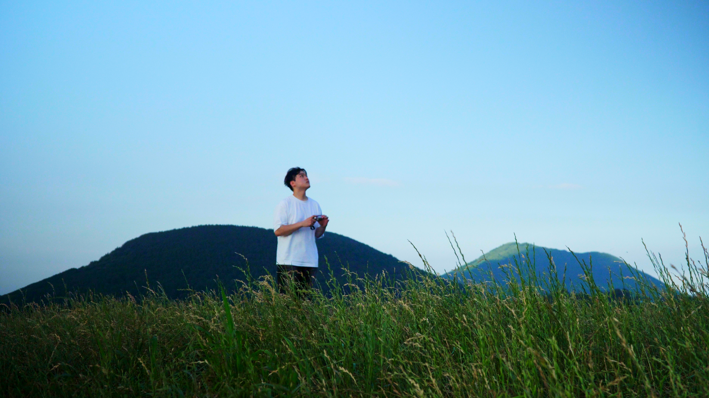